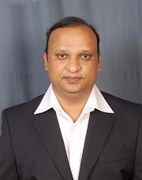

Civil Department
Vision
Be the Pioneer to mould the Students into Planners, Designers and Constructors by making them as Stewards of Natural Environment and Infrastructural Facilities by adopting Innovative Practices of Civil Engineering
Mission
- Promote the students by imparting the quality education to meet the needs of industry/higher education.
- Inculcate the culture of innovation and entrepreneurship skills among students.
- Achieve academic/research excellence by the services of the faculty.
- Continuously engage students in sustainable design thinking for societal development and benefit.

Dr. G. V. PRAVEEN
HOD, Civil dept
B.Tech Programme Outcomes (POs)
- Engineering knowledge: Apply the knowledge of mathematics, science, engineering fundamentals, and specialization of CivilEngineering to the solution of complex engineering problems.
- Problem analysis: Identify, formulate, review research literature, and analyze complex engineering problems reaching substantiated conclusions using first principles of mathematics, natural sciences, and engineering sciences.
- Design/development of solutions: Design solutions for complex engineering problems and design system components or processes that meet the specified needs with appropriate consideration for the public health and safety, and the cultural, societal, and environmental considerations.
- Conduct investigations of complex problems: Use research-based knowledge and research methods in the area of Civil Engineering including design of experiments, analysis and interpretation of data, and synthesis of the information to provide valid conclusions.
- Modern tool usage: Create, select, and apply appropriate techniques, resources, and modern engineering and IT tools useful for Civil Engineering and related areas including prediction and modeling to complex engineering activities with an understanding of the limitations.
- The engineer and society: Apply reasoning informed by the contextual knowledge to assess societal, health, safety, legal and cultural issues and the consequent responsibilities relevant to the professional engineering practice.
- Environment and sustainability: Understand the impact of the professional engineering solutions in societal and environmental contexts, and demonstrate the knowledge of, and need for sustainable development.
- Ethics: Apply ethical principles and commit to professional ethics and responsibilities and norms of the engineering practice.
- Individual and team work: Function effectively as an individual, and as a member or leader in diverse teams, and in multidisciplinary settings.
-
Communication: Communicate effectively on complex Civil Engineering activities with the engineering community and with society at large, such as, being able to comprehend and write effective reports and design documentation, make effective presentations, and give and receive clear instructions.
- Project management and finance: Demonstrate knowledge and understanding of the engineering and management principles and apply these to one’s own work, as a member and leader in a team, to finalize technical and financial aspects of a project and to manage in multidisciplinary environments.
- Life-long learning: Recognize the need for, and have the preparation and ability to engage in independent and life-long learning in the broadest context of technological changes through individual/group assignments such as technical seminars, lab projects, group projects, mini and main projects in the area of Civil Engineering or in multi disciplinary areas.